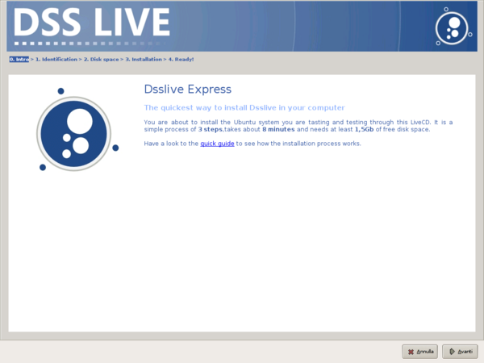
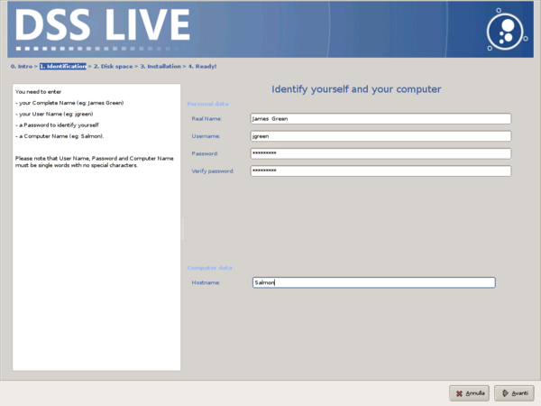
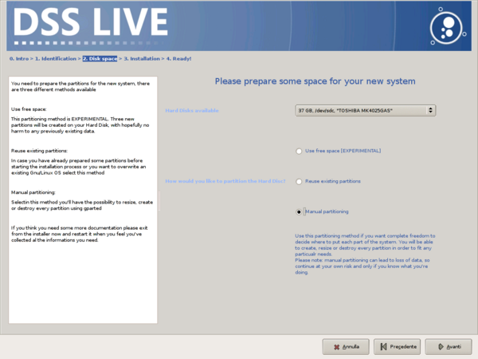
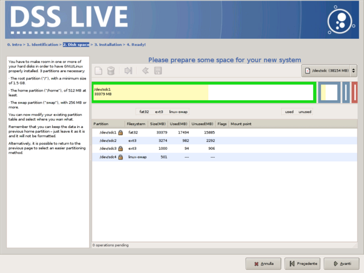
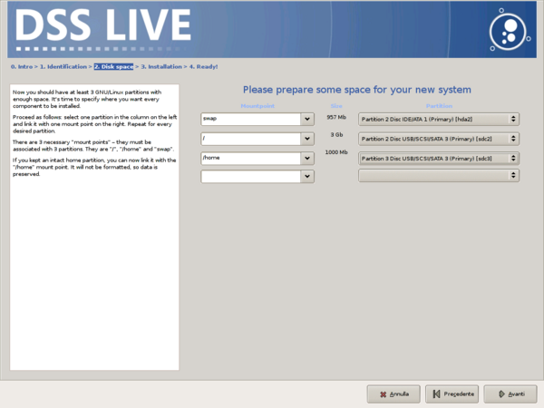
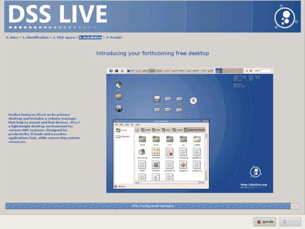
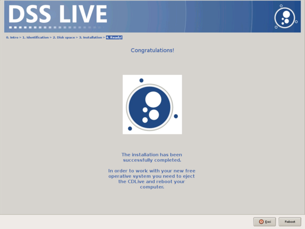

| The page you have just visited. Introduction, link to this quick guide and start of the installation process. |
|

|
| Defining your name, user ID, password and the name of your computer
The user, that will be generated during the installation, will be the
administrator (super user), this will allow to add or delete users
and groups, activate or deactivate services, install new
applications, change data and time. When the installation process
will be over, it's suggested to add a new user without administrator
privileges.
|
|

|
| The installer tries to make room for your Dsslive system, automatically. |
|  |
| You can organize your disk space manually, if you prefer. |
|

|
| In this case it will be needed to specify in which partition to install each part of the system. |
|

|
| About 15 minutes of automatic copy of files. You can watch the simultaneous Dsslive slide tour to know more abotu the system that is being installed in your computer. Or you can simply go for a drink. |
|

|
| End of the installation. Reboot your computer and start your new Dsslive love story. |
|

|